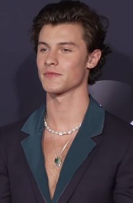

Es un cantante y compositor canadiense. Consiguió seguidores en 2013, publicando versiones de canciones en la aplicación para compartir videos Vine
¿Quien es Shawn Mendes?

Shawn Mendes
Shawn Peter Raul Mendes ( / m ɛ n d ɛ z / ; nacido el 8 de agosto de 1998) es un cantante y compositor canadiense. Consiguió seguidores en 2013, publicando versiones de canciones en la aplicación para compartir videos Vine . Al año siguiente, llamó la
atención del manager de artistas Andrew Gertler y de Island Records A&R Ziggy Chareton, lo que lo llevó a firmar un contrato con el sello discográfico. Desde entonces, lanzó tres álbumes de estudio , encabezó tres giras mundiales y recibió
varios premios . Mendes lanzó su EP debut homónimo (2014) y su álbum de estudio debut Handwritten (2015), cuyo sencillo " Stitches " alcanzó el número uno en el Reino Unido y el top 10 en los Estados Unidos y Canadá. Luego lanzó su segundo
álbum de estudio Illuminate (2016), cuyos sencillos " Treat You Better " y " There Nothing Holdin 'Me Back " llegaron al top 10 en varios países. Su tercer álbum de estudio homónimo (2018) fue apoyado por el sencillo principal " In My
Blood ". Los tres álbumes debutaron en la cima del Billboard 200 de EE. UU ., el primero convirtió a Mendes en uno de los cinco artistas en debutar en el número uno antes de los 18 años y el tercero lo convirtió en el tercer artista más
joven en lograr tres álbumes número uno. En 2017, Mendes se convirtió en el primer artista en conseguir tres sencillos número uno en la lista Billboard Adult Contemporary antes de cumplir 20 años. En 2018, se convirtió en el primer artista
en lograr cuatro sencillos número uno en la lista Adult Pop Songs antes de los 20 años también. En 2019, lanzó los exitosos sencillos " If I Can't Have You " y " Señorita ", y este último alcanzó el número uno en el Billboard Hot 100 de
EE . UU . Entre sus reconocimientos, Mendes ha ganado 13 premios SOCAN , 10 MTV Europe Music Awards , ocho premios Juno , ocho iHeartRadio MMVA , dos American Music Awards y tres nominaciones a los premios Grammy. En 2018, Time nombró
a Mendes como una de las 100 personas más influyentes del mundo en su lista anual .
Carrera de Shawn Mendes
Mendes aprendió a tocar la guitarra viendo videos tutoriales de YouTube a la edad de 14 en 2012. [8] Menos de un año después, comenzó a publicar videos de versiones en YouTube. Mendes comenzó a atraer espectadores después de publicar una versión de "
As Long as You Love Me " de Justin Bieber en la aplicación de videos sociales Vine en 2013 y obtuvo 10,000 me gusta y la misma cantidad de seguidores al día siguiente. Después de eso, ganó millones de visitas y seguidores en unos pocos
meses, volviéndose conocido por sus fragmentos de seis segundos de interpretaciones de muchas canciones populares. [9] Mendes vio a Bieber como un modelo de carrera en ese momento. [10] En agosto de 2014, era el tercer músico más seguido
en Vine.[11] El mánager de artistas Andrew Gertler descubrió a Mendes en línea en noviembre de 2013, y lo llevó a Island Records en enero de 2014. En abril, ganó elconcurso "Mejor canción de portada" de Ryan Seacrest con " Say Something
" de A Great Big World . Firmó oficialmente con Island en mayo de 2014. Lanzó su primer sencillo " Life of the Party " el 26 de junio de 2014. [12] Se convirtió en el más joven en debutar en el top 25 en el Billboard Hot 100 de Estados
Unidos , llegando al número 24 en la semana que terminó el 12 de julio de 2014. . [13] Antes de su firma, Mendes viajó como miembro de la MagCon Información [14] junto con otros Viners jóvenes con un gran número de seguidores en las redes
sociales. [15] Mendes también estaba de gira por todo el país con Austin Mahone como telonero. Lanzó su EP debut con un sello discográfico importante en julio. [16] El EP debutó y alcanzó el puesto número cinco en Billboard 200., vendiendo
48.000 copias en su primera semana. [17] Ganó un premio Teen Choice en 2014 por Webstar in Music. [18] El 5 de septiembre de 2014, " Oh Cecilia (Breaking My Heart) " con Mendes fue lanzado como el quinto sencillo del álbum debut de The
Vamps , Meet the Vamps . [19] El 6 de noviembre de 2014, " Something Big " fue lanzado como segundo sencillo. [20]
Filantropía y causas apoyadas
En 2014, Mendes y DoSomething.org lanzaron su campaña llamada "Notas de Shawn" donde se animaba a los fans a escribir notas positivas y dejarlas en lugares inesperados. La campaña se inspiró en la letra de su primer sencillo, "Life of the Party", y abordó
la baja autoestima, la depresión y la conciencia de las autolesiones. [110] Relanzaron su campaña por segundo año consecutivo en 2015, donde la campaña se etiquetó en línea como NotesFromShawn. Se asoció con BlendApp con el objetivo de
recaudar hasta $ 25,000, donde se recaudó $ 1 por cada registro y mensaje positivo compartido en la aplicación. [111] La campaña se relanzó por tercer año consecutivo en 2016. [112] También ha trabajado con Pencils of Promise , una organización
sin fines de lucro que construye escuelas y ayuda a mejorar la calidad de la educación para los países en desarrollo, recaudando $ 25,000 para construir una escuela en Ghana . [113]